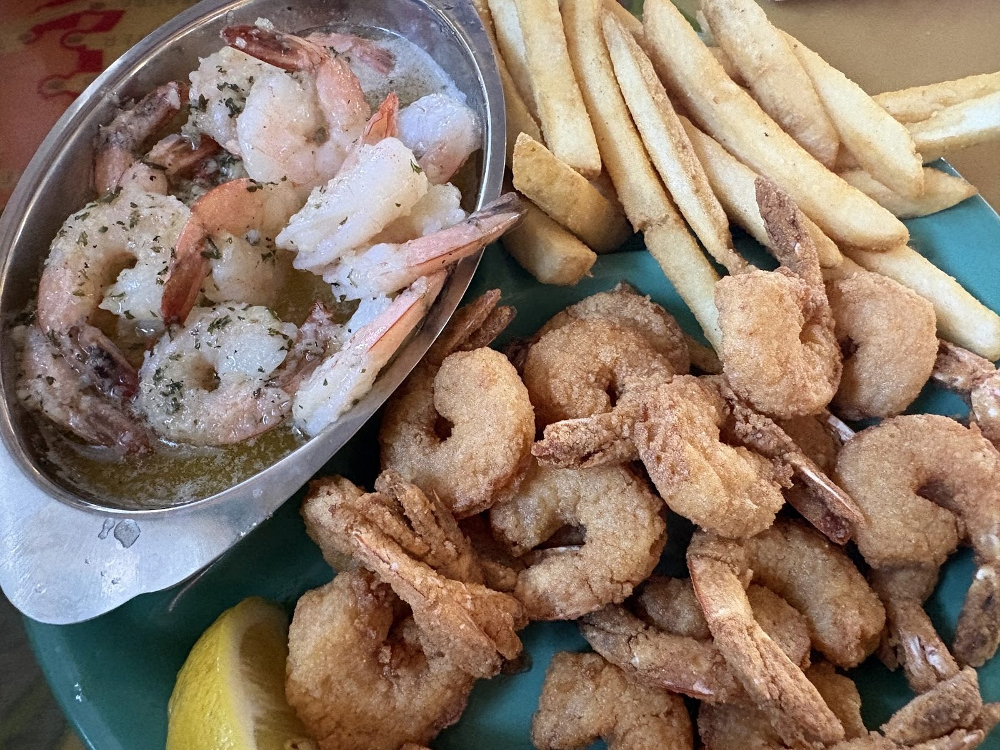
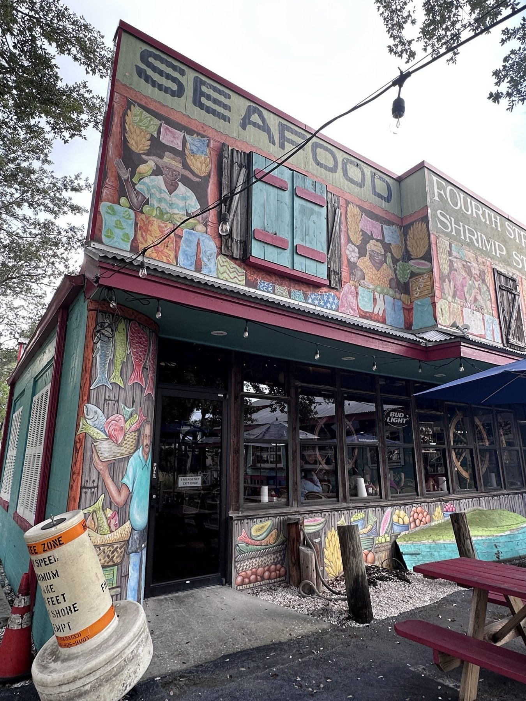

Shrimp, shrimp and more shrimp
Fried, scampi, steamed U-Peel-Em's or coconut, with a side and slaw.

Seafood restaurant · St. Petersburg, FL
Shrimp, grouper, fish tacos and key lime pie in a fun, funky room.

What to order
Where to start.
Fried, scampi, steamed U-Peel-Em's or coconut, with a side and slaw.
Grouper, mahi, cod and salmon. Blackened fish tacos and po'boys, each with a side.

Pain Killer, Rum Runner and a Bloody Mary with an Old Bay rim.


4.6 ★ · 3989 Google reviews
GUEST CHECK№ 1Had an awesome visit to Fourth Street Shrimp Store. Alicia B was fantastic, friendly, attentive, and welcoming. The jumbo shrimp cocktail was spot-on, the blackened basa early bird dinner was delicious, and the crab croquette was another winner. I really enjoyed the 3D Beach Blonde beer, and the key lime pie for dessert absolutely hit the spot 🍋🟩. Great food, great service, great vibe.
GUEST CHECK№ 2The 4th Street Shrimp Store is one of those local restaurants that keeps you coming back. From the moment you walk in, you notice how clean, welcoming, and comfortable the atmosphere is. It has a cozy, authentic feel that makes it easy to relax and enjoy a great meal. One of my favorite features is the small bar area. It is the perfect place to grab a seat, enjoy a drink, and settle in for some outstanding seafood.
GUEST CHECK№ 3Early dinner, ate too much! Enjoyed the Fish Spread starter which I eat whenever on a menu-would be ++better if served with Captain Crackers. Had the Tuna Tacos, Grouper dinner with great broccoli side, enjoyed the beers. Multiple seating areas in & outside, attentive service!

Since the first pot of coffee
Fresh seafood on 4th Street North since 1984, in a fun, funky, casual room. License plates cover the beams, and a small bar sits inside.
Seating inside and outside. Early bird dinners run 11 AM to 6 PM, with smaller portions and smaller prices.
Slide on in
1006 4th St N, St. Petersburg, FL 33701
Seating inside and outside. We close at 8 PM on Sundays.